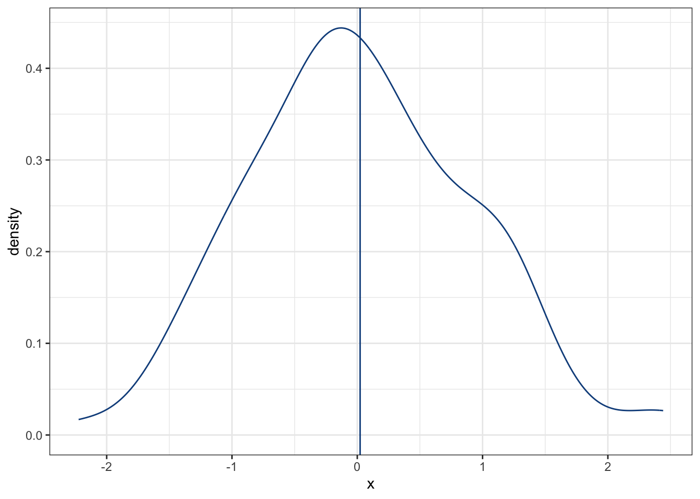
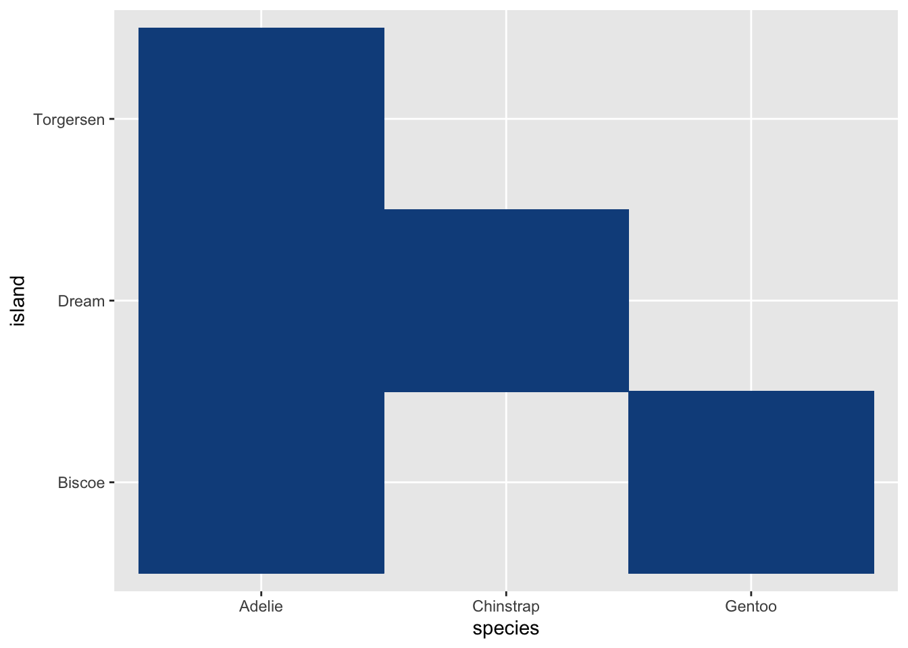

library(ggplot2)
library(GGally)
library(palmerpenguins)8 Estadística descriptiva
En la sesión de visualización hablamos de que hay una gran cantidad de formas en las cuales podemos describir el mundo que nos rodea. Una imágen habla más que mil palabras, y es una forma de resumir nuestros datos; sin embargo, está lejos de ser la única y, de hecho, por lo general buscamos que el gráfico acompañe a un resumen numérico, en forma de un solo valor o índice. A los seres humanos nos gusta la simpleza, después de todo. Bueno, de eso es de lo que vamos a hablar hoy.
8.1 Descripciones o exploraciones
Ya fuimos a campo o al laboratorio, realizamos nuestro muestreo o experimiento, y tenemos nuestros datos. ¿Ya podemos empezar a hacer pruebas de significancia y regresiones, no? Técnicamente sí, pero paremos nuestro tren y no querramos correr antes de saber caminar. Al momento de realizar el análisis de nuestros datos es “sano” que nos familiaricemos con ellos antes de realizar cualquier proceso de estadística inferencial. El objetivo de la estadística descriptiva es, como el nombre indica, describir la información contenida en los datos, para lo cual utiliza métodos que resumen la información: medidas de tendencia central/dispersión y gráficos. ¿Por qué es importante? Nos permite familiarizarnos con la información con la que contamos, ya sea para identificar patrones, seleccionar variables importantes, visualizar inconsistencias en los datos, detectar anomalías y mucho más. Notarás conforme avancemos en el curso que la visualización de nuestros datos juega un papel importantísimo durante la interpretación, pero empecemos desde abajo.
Estoy seguro de que algunos de los conceptos que revisaremos en esta sesión los has revisado ya con anterioridad, por lo que no te haré el cuento largo, sino que me enfocaré más en las peculiaridades de cada una de las medidas y gráficos, en qué escenarios son útiles, cuándo no lo son tanto y lo enlazaremos con temas que veremos más adelante.
8.2 Medidas de tendencia central
Comencemos hablando con lo que, por lo general, es nuestro mayor interés: hacia dónde tienden nuestros datos. Para ello tenemos algunas medidas de tendencia central; es decir, literalmente describimos nuestros datos a partir de dónde se acumulan más.
8.2.1 Media
La primera de estas medidas es, posiblemente, la más común de todas: la media o el promedio. En su forma más simple; es decir, la media aritmética la obtenemos sumando todos nuestros datos y dividiéndolos entre su número:
\[ \overline{x} = \frac{\sum_{i = 1}^n x_i}{n} \]
Esto es conocimiento general, y es algo con lo que todos los estudiantes somos torturados eventualmente. Bueno, más que recordar cómo calcularlo e implementarlo en R (mean(x), donde x es un vector de observaciones), pensemos en qué representa. La media es, literalmente, un indicador de hacia qué valor se están acumulando nuestros datos, tal y como si colgáramos cosas en un tendedero (házme un favor y piensa en que el siguiente gráfico está invertido verticalmente):
set.seed(0)
x <- data.frame(x = rnorm(100, mean = 0))
plot1 <- ggplot(data = x, aes(x = x)) +
geom_density(color = "dodgerblue4") +
theme_bw() +
geom_vline(xintercept = mean(x$x),
color = "dodgerblue4")
plot1
En este caso, la mayor parte de nuestros datos están acumulados alrededor de 0. ¿Qué crees que pase si añadimos otros 20 datos, esta vez acumulados en 5? Veámos el cambio:
set.seed(0)
x2 <- rbind(x, data.frame(x = rnorm(20, mean = 5)))
plot2 <- plot1 + geom_density(aes(x = x),
data = x2,
color = "firebrick")
plot2 + geom_vline(xintercept = mean(x2$x),
color = "firebrick")Como era de esperarse, la media se “jaló” a la derecha, y de manera bastante notable. Esos 5 valores extremos tuvieron un peso bastante importante. Literalmente fue como si hubiéramos colgado cinco cosas más en nuestro tendedero, pero alejadas de la ropa que colgamos en un inicio. Aunque la media es una manera muy efectiva de resumir nuestros datos, esto solo es cierto si estos se parecen a una distribución normal (en la sesión de técnicas paramétricas hablaremos duro y tendido con respecto a esto), pero si no, como en nuestro caso con los nuevos valores, es necesario buscar una alternativa.
8.2.1.1 Media ponderada
Una de ellas es una modificación a la media, en la cuál cada valor tiene su propia ponderación o su propia importancia. Esa es la media con la que más padecemos los estudiantes de secundaria hacia arriba, pues el examen tiene una ponderación distinta a las tareas, por ejemplo. En mi caso personal, era un tormento cuando se ponderaba más las tareas que el examen, pero eso es otra historia. ¿Por qué es importante? Porque podemos utilizarla para “regresar” nuestra media a su lugar; de hecho, esta es la base fundamental detrás de las regresiones robustas, en donde el peso de cada observación disminuye según incrementa su distancia de 0:
# Pesos: fracción de la distancia máxima a 0
w <- max(abs(0 - x2$x))/abs(0 - x2$x)
# Media ponderada
wmean <- weighted.mean(x2$x, w)
plot2 + geom_vline(xintercept = wmean,
color = "firebrick")8.2.1.2 Media geométrica
Esta es menos conocida, y representa el promedio de porcentajes, razones o tasas de crecimiento. Se expresa como la raiz n-ésima del producto de los n valores:
\[MG = \sqrt[n]{\Pi_i^nx_i}\]
Pensemos en que estimamos la tasa de crecimiento poblacional (\(\lambda\)) anual de ballenas jorobadas en tres años seguidos, a partir de un modelo de marca-recaptura, y los valores que obtuvimos fueron 1.03, 0.98, 1.4, 0.94:
lamb <- c(1.03, 0.98, 1.4, 0.94)
prod(lamb)^(1/length(lamb))[1] 1.073569Es decir, el crecimiento poblacional promedio fue del 7%.
Otra manera de calcularla es:
\[ MG = e^\overline{log(\lambda)} \]
exp(mean(log(lamb)))[1] 1.073569¿Te animas a encontrar la igualdad matemática?
8.2.2 Mediana
Una alternativa más es la mediana. A diferencia de la media, que “busca” hacia donde se están acumulando los datos, la mediana nos indica exactamente que valor se encuentra en el centro de nuestra base de datos. Si partimos nuestra base de datos en 100 partes iguales (100%), cada parte representa un cuantil (1%). Cada diez cuantiles tenemos un decil, cada 25 cuantiles tenemos un cuartil (cuartiles 25%, 50% y 75%), y en el cuartil 50 tenemos la mediana. Esta es, entonces, mucho menos sensible a valores extremos:
plot2 + geom_vline(xintercept = median(x2$x),
color = "firebrick")La estimación no es exactamente la misma que la media de los datos originales o de la media ponderada según su distancia a 0; sin embargo, el efecto es notablemente menor que con la media tradicional. Esta resistencia a valores extremos es lo que hace que las técnicas no paramétricas estén basadas en la mediana, en vez de la media.
8.2.3 Moda
La moda corresponde al valor que más se repite en un conjunto de datos. Con datos continuos en el sentido estricto no existe; sin embargo, en muchos casos sí que podemos tener repetidos dependiendo de la escala y la precisión de nuestro instrumento. Otra manera de calcularla es discretizando nuestros datos y encontrar el intervalo más frecuente. Una propiedad interesante de la moda es que su valor corresponde con el valor que tiene la mayor probabilidad dentro de la distribución, por lo que puede ser útil en ciertos casos de Inferencia Bayesiana. Para calcularla podemos utilizar la función Mode(x) de la librería DescTools:
letmode <- DescTools::Mode(c("a", "a", "b", "c", "d"))
letmode[1] "a"
attr(,"freq")
[1] 2A lo largo de este curso no aplicaremos la moda, solo la agregué para que la tengas presente.
8.3 Medidas de dispersión
Al igual que en el caso anterior, repasaremos rápidamente las medidas de dispersión, con el objetivo de explorar la intuición detrás de ellas y su relación con otros conceptos que revisaremos más adelante. Independientemente de cuál utilicemos, todas las medidas de dispersión indican justamente eso, qué tan grande es la variabilidad de una distribución, ya sea de nuestros datos o la distribución muestral del parámetro que estemos estimando.
8.3.1 Desviación estándar y Varianza
En pocas palabras, la varianza es una medida de la dispersión promedio de los datos; es decir, cuál es el área promedio que abarca la dispersión de los datos. En la sección de Multivariado vamos a ver cuál es la relación entre la varianza y la covarianza, a entender a la varianza como un caso especial de la covarianza y ver de dónde sale esa suma de cuadrados. Esto último también me lleva a que cada que leas suma de cuadrados pienses en una medida de dispersión o en la varianza de los datos.
\[ \sigma^2 = \frac{\sum{(x_i - \mu)^2}}{N} \]
La desviación estándar, por otra parte, es simplemente la raíz cuadrada de la varianza. Si la varianza representa un área, la desviación estándar representa una distancia, la distancia promedio que existe entre cada uno de los datos y la media. Estas dos medidas (la desviación estándar y la varianza) son sumamente útiles y utilizadas en los procesos estadísticos; de hecho, junto con la media, son los principales parámetros poblacionales que usualmente queremos estimar a partir de nuestra muestra. Una aclaración es que la ecuación de arriba es para calcular la varianza poblacional, mientras que si queremos calcular la varianza muestral aplicaremos una corrección con los grados de libertad (que definiremos más adelante)
\[ s^2 = \frac{\sum(x_i - \overline{x})^2}{n-1} \]
Esta varianza muestral se considera un estimador insesgado de la varianza poblacional.
8.3.1.1 Estimadores
Este es un buen momento para hablar de los estimadores. ¿Qué es un estimador? Una medida que utilizaremos para estimar un parámetro poblacional. Evidentemente, no puede ser cualquier número ni cualquier medida, debe de tener ciertas características. Particularmente:
- Insesgado: Es decir, que la media de la distribución del estimador sea igual al parámetro. De nuevo, en la sesión de técnicas paramétricas vamos a hablar sobre distribuciones muestrales, el teorema del límite central y su implicación para el supuesto de normalidad que a veces puede ser un dolor de cabeza. Por lo pronto entiende que “la media de la distribución del estimador” hace referencia a que, si hicieramos una cierta cantidad de muestreos y calculamos algún parámetro para cada muestreo, el promedio de esas estimaciones debe ser igual al parámetro poblacional.
- Consistencia: Es la propiedad en la que un estimador se aproxima al valor del parámetro conforme incrementa el tamaño de muestra, lo cual también tiene que ver con el teorema del límite central que revisaremos más adelante.
- Eficiencia: La estimación tiene el error estándar más pequeño cuando se compara con otro estimador. Por ejemplo, en una distribución Normal, la media y la mediana son prácticamente iguales; sin embargo, el error estándar de la media es \(\frac{\sigma}{\sqrt{n}}\), mientras que el de la mediana es \(\approx 1.25\) veces ese valor.
- Suficiencia: El estimador es, por sí mismo, capaz de transmitir toda la información disponible en la muestra sobre el valor del parámetro.
Por estas 4 razones es que la mayor parte de nuestras inferencias están en relación a la media poblacional, estimada a partir de la media muestral. La mediana no se considera un buen estimador de la media poblacional si la distribución no es simétrica, pues, como vimos arriba, está sesgada en relación a la media poblacional. Por otra parte, su error estándar es mayor que el error estándar de la media (en términos de sus distribuciones muestrales), ni utiliza todos los datos (solo el cuantil 50).
8.3.2 Coeficiente de variación
El coeficiente de variación, también conocido como la desviación estándar relativa, es la relación que existe entre la desviación estándar y la media de los datos, tal que:
\[ CV = \frac{\sigma}{\mu}*100 \]
Este es especialmente útil cuando queremos comparar las dispersiones de dos cosas que están en distinta escala, o expresar en un porcentaje qué tan grande es nuestra variabilidad en relación a nuestra estimación. Si hacemos una estimación de tamaño poblacional de 1000 individuos, con un coeficiente de variación del 50% quiere decir que nuestra variabilidad es de la mitad de nuestra estimación.
8.3.3 Error estándar
Esta medida es especialmente útil en la estimación de los intervalos de confianza de cualquier parámetro, y representa la desviación estándar de su distribución muestral, el cuál podemos estimar como:
\[ \sigma_{\overline{x}} \approx \frac{\sigma_x}{\sqrt{n}} \]
Normalmente nosotros no estimaremos o interpretaremos esta medida, sino que iremos directamente a los intervalos de confianza para expresar la incertidumbre alrededor de nuestras estimaciones.
Nota
¿Qué son los intervalos de confianza? Son una medida de la incertidumbre en la estimación de nuestro parámetro de interés, pero hablaremos de ellos más a detalle en las siguientes sesiones.
8.4 Gráficos
En la sesión de visualización vimos las consideraciones que debemos de tener en cuenta para hacer una visualización efectiva, pero no hablamos de los tipos de gráficos que podemos realizar. En esta sesión, entonces, no entraremos a ver los detalles de la visualización, simplemente hablaremos de los gráficos más comunes, en qué escenarios son útiles y cómo construirlos utilizando ggplot2. Para esta parte utilizaremos datos de biometrías de pinguinos, contenidos en la librería palmerpenguins
8.4.1 Gráfico de frecuencias
También nombrado a veces histograma. Es, posiblemente, el gráfico más sencillo de todos, pues lo único que hacemos es poner una barra a la altura del número de individuos que hay en una clase o intervalo. Para construirlo en ggplot2 utilizaremos la capa geom_histogram:
ggplot(data = penguins,
aes(x = bill_length_mm)) +
geom_histogram(fill = "dodgerblue4")`stat_bin()` using `bins = 30`. Pick better value with `binwidth`.Warning: Removed 2 rows containing non-finite outside the scale range
(`stat_bin()`).Si tenemos más de un grupo y queremos ver todas las distribuciones de frecuencia podemos pasar el argumento fill dentro de los argumentos de estética (aes())
ggplot(data = penguins,
aes(x = bill_length_mm, fill = species)) +
geom_histogram()`stat_bin()` using `bins = 30`. Pick better value with `binwidth`.Warning: Removed 2 rows containing non-finite outside the scale range
(`stat_bin()`).Habrás notado que ggplot2 nos dio una notificación con respecto al número de intervalos (cajas) utilizados para estimar las frecuencias, en particular que utilizó 30. Podemos seleccionar una cantidad manualmente, por ejemplo 100, y especificarla con el argumento bins, o especificar la amplitud del intervalo con el argumento binwidth:
ggplot(data = penguins,
aes(x = bill_length_mm, fill = species)) +
geom_histogram(bins = 100)Warning: Removed 2 rows containing non-finite outside the scale range
(`stat_bin()`).¿El problema? ¿Cómo sabemos cuántos intervalos utilizar? Si ya hay intervalos establecidos, por ejemplo longitudes para estados de madurez sexual, podemos establecer esos intervalos, pero si nuestra distribución es continua podemos utilizar una mejor alternativa.
8.4.2 Gráfico de densidad
Los gráficos de densidad nos permiten, justamente, representar gráficamente la distribución de una variable continua. Recordarás de la clase de probabilidad que la probabilidad de un valor continuo es teóricamente 0, pero podemos estimar la densidad de probabilidad de un punto determinado si hacemos el intervalo infinitesimalmente pequeño, y es esto lo que representa un gráfico de densidad. Piensa en él como una versión suavizada de un gráfico de frecuencias:
ggplot(data = penguins,
aes(x = bill_length_mm, fill = species)) +
geom_density(color = NA)Warning: Removed 2 rows containing non-finite outside the scale range
(`stat_density()`).Eso se ve bastante mejor, pues ya no tenemos la incertidumbre de cuántas “cajas” formar para encajonar nuestros datos, pero no es lo más adecuado para comparar distribuciones de manera gráfica. Afortunadamente, también tenemos alternativas para eso.
8.4.3 Gráfico de cajas y bigotes
Una es el clásico gráfico de cajas y bigotes, en el cuál hay (por grupo) un indicador (punto, línea horizontal o muesca) de la tendencia central (media, mediana), una caja que indica una medida de dispersión (desviación estándar, rango intercuantil, error estándar) y dos “bigotes” (líneas verticales) que indican los límites “aceptables” de la distribución. Adicionalmente tenemos puntos “libres” que indican valores extremos. En ggplot2 podemos construirlos con la capa geom_boxplot, siempre que especifiquemos en aes() una variable de agrupamiento para x, la variable de la que queremos ver el interés en y y, opcionalmente, un argumento de color que corresponda con los grupos en x.
ggplot(data = penguins,
aes(x = species, y = bill_length_mm,
color = species)) +
geom_boxplot(fill = NA)Warning: Removed 2 rows containing non-finite outside the scale range
(`stat_boxplot()`).Infortunadamente perdemos mucha información si lo comparamos con el gráfico de densidad. Si tan solo hubiera una manera de mezclarnos… ¡Espera! Sí que la hay.
8.4.4 Gráfico de violín
Los gráficos de violín son, justamente, una alternativa más “fina” a los gráficos de cajas y bigotes, en los cuales podemos mostrar la distribución completa de cada grupo. En ggplot2 utilizaremos la capa geom_violin, que requiere exactamente la misma información que el gráfico de caja y bigotes:
ggplot(data = penguins,
aes(x = species, y = bill_length_mm,
color = species)) +
geom_violin(fill = NA)Warning: Removed 2 rows containing non-finite outside the scale range
(`stat_ydensity()`).Afortunadamente, uno no está peleado con el otro, y podemos añadir la información resumida disponible en el gráfico de cajas y bigotes:
ggplot(data = penguins,
aes(x = species, y = bill_length_mm,
color = species)) +
geom_violin(fill = NA) +
geom_boxplot(fill = NA, width = 0.1)Warning: Removed 2 rows containing non-finite outside the scale range
(`stat_ydensity()`).Warning: Removed 2 rows containing non-finite outside the scale range
(`stat_boxplot()`).Con estos gráficos vemos la relación entre una variable categórica y una variable numérica, pero ¿qué pasa si tenemos dos variables numéricas?
8.4.5 Gráfico de dispersión
El gráfico más básico es el gráfico de dispersión. Simplemente es un gráfico de las coordenadas dadas por una variable x con respecto a una variable y. En ggplot2 utilizaremos la capa geom_point:
ggplot(data = penguins,
aes(x = flipper_length_mm,
y = bill_length_mm)) +
geom_point(color = "dodgerblue4")Warning: Removed 2 rows containing missing values or values outside the scale range
(`geom_point()`).Al igual que en el gráfico de frecuencias, podemos colorear los puntos según una variable categórica:
ggplot(data = penguins,
aes(x = flipper_length_mm,
y = bill_length_mm)) +
geom_point(aes(color = species))Warning: Removed 2 rows containing missing values or values outside the scale range
(`geom_point()`).E, incluso, según una variable continua:
ggplot(data = penguins,
aes(x = flipper_length_mm,
y = bill_length_mm)) +
geom_point(aes(color = body_mass_g))Warning: Removed 2 rows containing missing values or values outside the scale range
(`geom_point()`).¿Y si no me interesa ver todos los puntos, sino las distribuciones bivariadas? También tenemos alternativas.
8.4.6 Gráfico de densidad bivariado
Podemos utilizar un gráfico de densidad bivariado, el cual muestra contornos correspondientes a la densidad de los puntos. Su interpretación es exactamente igual a un mapa topográfico. Los contornos más pequeños representan la mayor densidad, mientras que los más grandes una menor densidad.
ggplot(data = penguins,
aes(x = flipper_length_mm,
y = bill_length_mm)) +
geom_density2d(aes(color = species))Warning: Removed 2 rows containing non-finite outside the scale range
(`stat_density2d()`).8.4.7 Heatmaps
¿Y si mis dos variables son discretas? No temas, para eso tenemos heatmaps:
ggplot(data = penguins,
aes(x = species,
y = island)) +
geom_tile(fill = "dodgerblue4",
color = "dodgerblue4")
Si tienes una variable adicional (pueden ser frecuencias o alguna variable continua) puedes agregarla con el argumento fill dentro de aes:
ggplot(data = penguins,
aes(x = species,
y = island)) +
geom_tile(aes(fill = bill_length_mm))¿Hay algún equivalente para tres variables numéricas? Por supuesto.
8.4.8 Gráfico de contornos
Podemos generar un gráfico de contornos, utilizando la capa geom_contour. OJO: para esta hay que hacer cierto procesamiento de los datos, en el sentido que hay que generar una malla uniforme de coordenadas x, y, z. Esto queda fuera de la discusión por este momento, pero lo revisitaremos cuando grafiquemos la zona de decisión de un análisis de funciones discriminantes lineales en la sesión de clasificación.
8.4.9 Otros gráficos
Estos gráficos están lejos de ser los únicos a nuestra disposición. Para comparar distribuciones también tenemos forest plots o ridgelines. Si queremos ver la relación entre más de dos variables, considerando cada individuo, podemos utilizar gráficos de coordenadas paralelas, para lo cual utilizaremos la función ggparcord de la librería GGally:
GGally::ggparcoord(data = penguins,
groupColumn = "species",
columns = 3:6)Y muchos otros más que no tendríamos tiempo de revisar en una sola sesión, cada uno con un uso particular. Algunos de ellos los veremos durante el curso, mientras que algunas otras alternativas las puedes encontrar en este enlace. También es importante mencionar que R base y ggplot2 no son las únicas librerías para generar gráficos en R. Podemos utilizar D3 o plotly, por ejemplo, para generar no solo otro tipo de gráficos, sino también hacerlos interactivos.
Esto sería todo para esta sesión. Espero que haya sido un buen recordatorio y que te sea de utilidad en algún futuro.